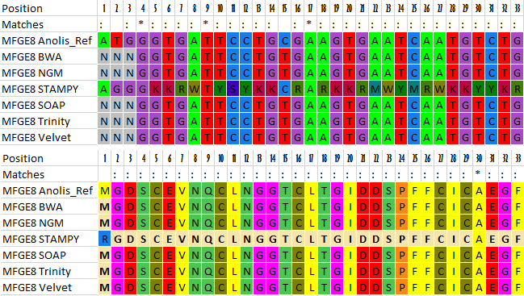

Mega.py
Alignment Viewer

Introduction
Written in Python, Mega.py is a complement to the popular aligner Mega(link). While Mega has a plethora of other varying functions (Muscle and ClustalW alignment algorithms, phylogeny construction, calculating evolutionary rates, etc.), this script solely focuses on displaying DNA and protein alignments in an user friendly manner. The motivation to write this program was to manage DNA ambiguity characters when translating to amino acid residues, which Mega cannot handle. The convenience of this allows the user to effortlessly visualize the resulting protein sequence to make inferences on its overall function or go back and decipher the intended nitrogenous base.
Features
- 3 distinct output modes:
- Reference: Uses 1st sequence in a FASTA file as a reference and pair-wise aligns the remaining sequences to it. Matching bases between the two strings are highlighted. Additionally, the sequences are translated at every possible frameshift position, allowing for forward open reading frames to be read off.
- DNA: Clusters nucleotide sequences according to gene and displays the similiarities and positions between the grouping.
- Protein: Clusters nucleotide sequences according to gene, translates each one to generate a protein sequence according to a suitable codon table, and displays the similarities and positions between the grouping.
- Robust against ambiguous nucleotides and amino acids; features a drop-down box to showcase each possible residue generated by enigmatic codons.
- A customizable colour palette for both DNA and protein alignments
Download
| Mega.zip | Mega.tar.gz | View on GitHub |
Demonstration
For the bioinformatics project I was working on, I needed to compare the outputs between three guided assemblers: BWA, NGM, & STAMPY and three de novo assemblers: SOAPdenovo-Trans, Trinity, & Velvet. All were used to recreate the exome for 160 different genes, but now I wanted to compare these results to both a reference genome and with each other. Since they were grouped by assembler, I wrote some primer scripts in order to regroup them by individual genes. RiffleFasta.py would be used for transposing the assembler grouping to gene symbol.
- #Group by genes instead of by assembler
- mkdir Genes
- python RiffleFasta.py Genes Data/{Anolis_Ref,BWA,NGM,STAMPY,SOAP,Trinity,Velvet}.fasta
- #Create Excel alignments
- mkdir Alignments
- python Mega.py -o Genes/Anolis $(ls Genes/*.fasta)
Finally, I used Mega.py to create 16 Excel files, each containing 10 different alignments. From this, I could easily see that the gap regions shared between all assemblers was due to poor capture efficiency of the enrichment probes used. More interestingly, I learned that STAMPY tended to follow the sequence of the reference genome during reconstruction, leading to numerous nonsensical ambiguities when viewing the protein alignments. Also noteworthy was that none of the assemblers were a clear winner in stitching together contiguous sequences as some would be able to recover areas which others would leave blank. Thus the use of all six (or more) in tandem could be used to create an effective consensus sequence, if one has the sheer computing power and free time (conveniently I have nothing better to do). Check out an example output file: Example.xlsx.
|  |
|---|
| Protein sequence comparison |
{kind=link}